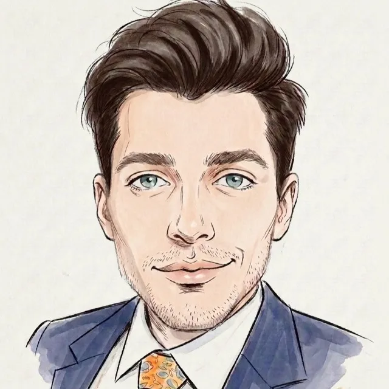
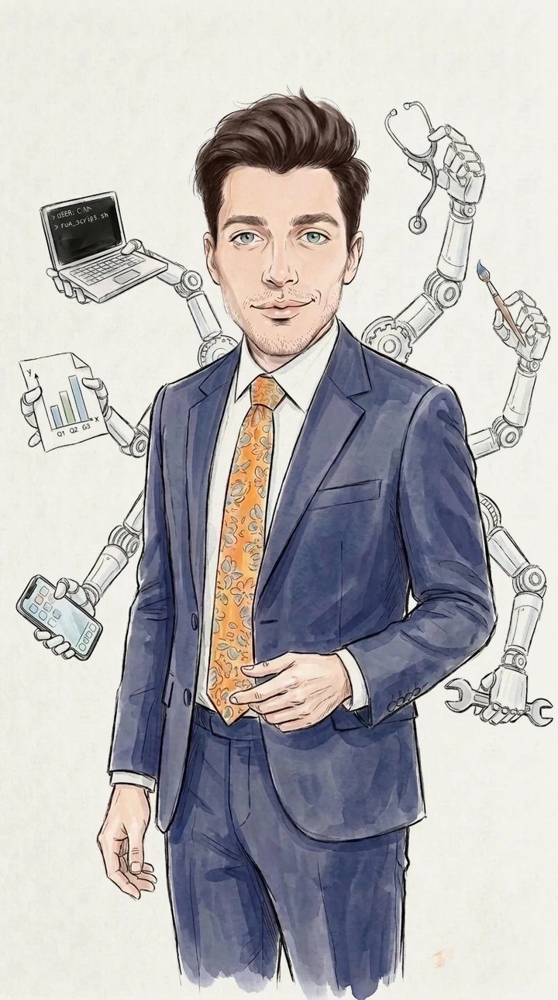
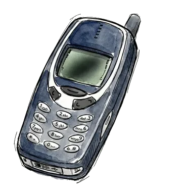

I build products, brands, and pipelines with AI, an opinion, and an eye.


LinkedIn and email work. A text reaches me quickest.
Text me
+1 412 944 5506



LinkedIn and email work. A text reaches me quickest.
Text me
